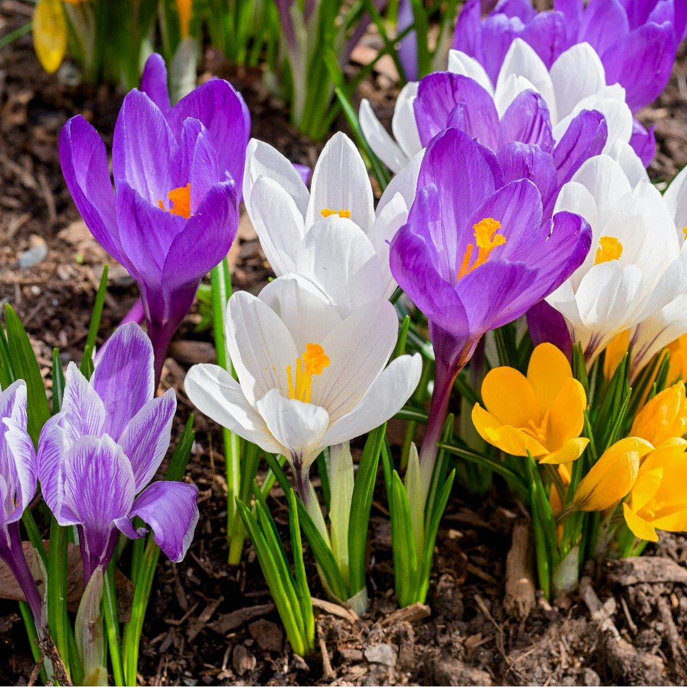
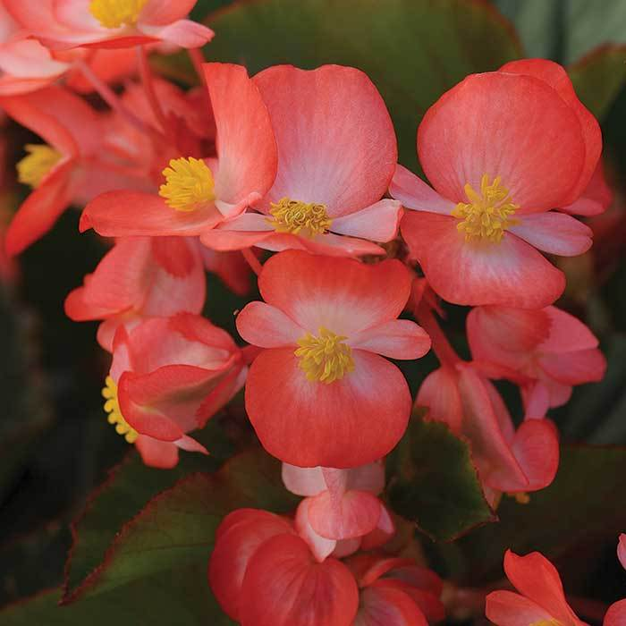
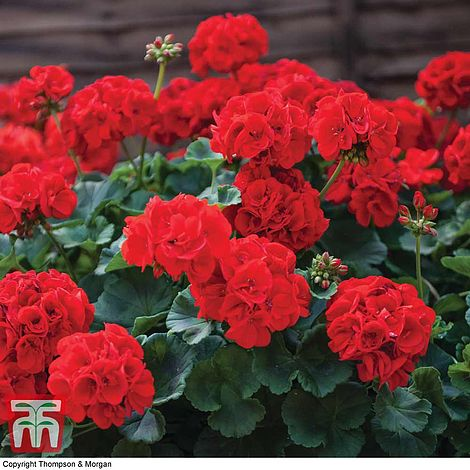
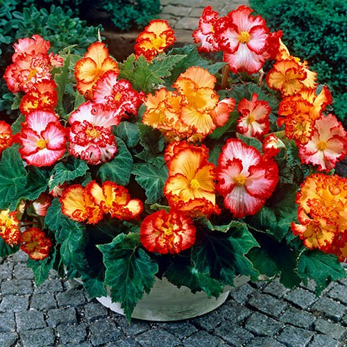
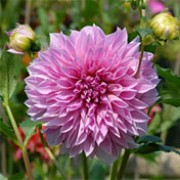
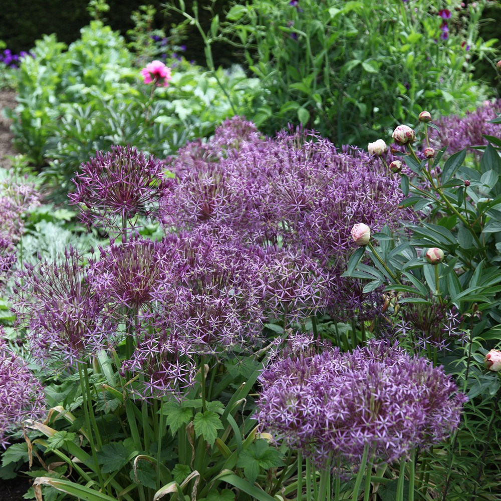
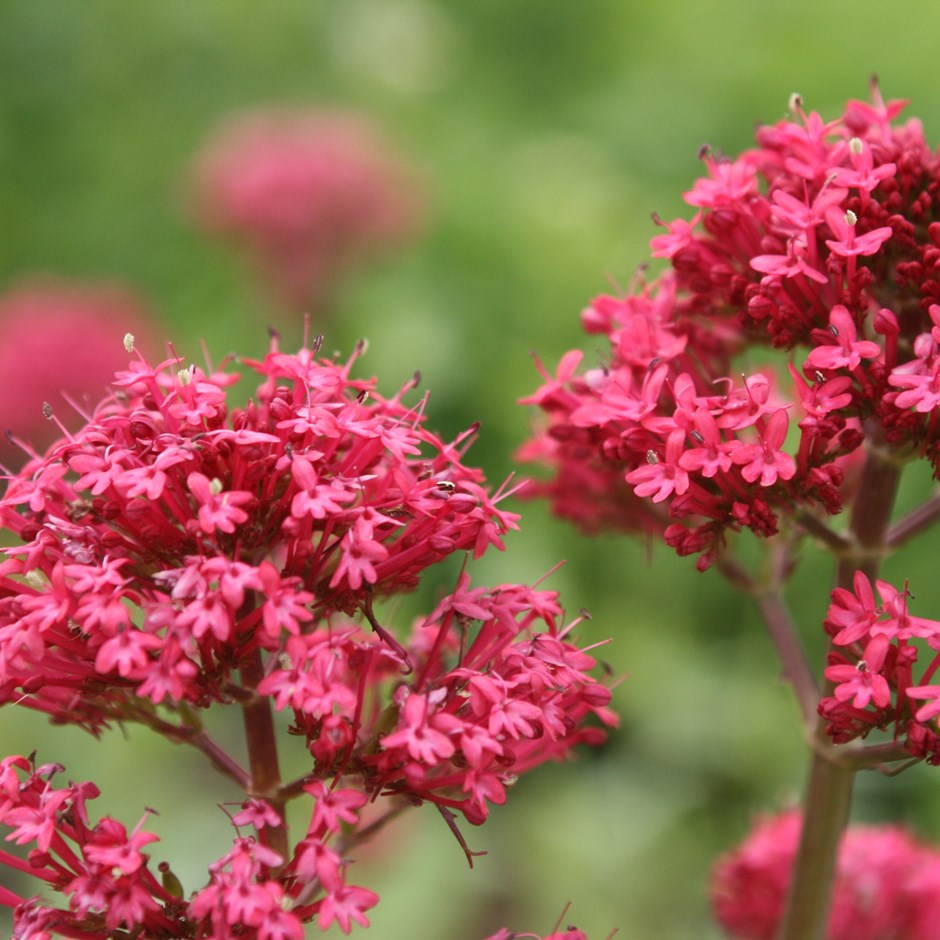
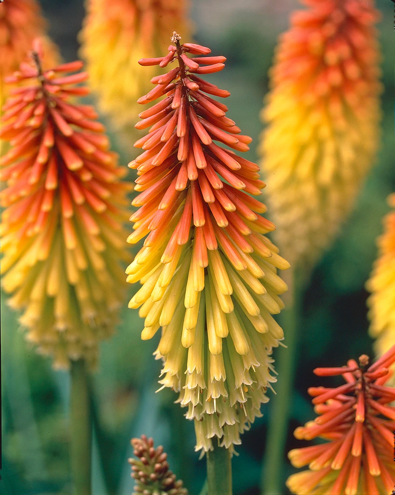

Outdoor Plants
Abbreviation
CN: Common NameBN: Botanical Name
| 1 | 2 | 3 | 4 | 5 |
| 1 | 2 | 3 |

CN: Larkspur, 翠雀属 BN: Delphinium 'Dark Blue White Bee' RHS Gardenia thompson-morgan |

CN: peony 'Coral Sunset', 芍药 BN: Paeonia 'Coral Sunset' RHS Gardenia yougarden |

CN: Geranium 'Angeleyes Orange', 天竺葵 BN: Pelargonium 'Angeleyes Orange' RHS Gardeners' World - Geranium (pelargonium) types explained davesgarden |

CN: Himalayan Blue Poppy, Meconopsis, 绿绒蒿属 BN: Meconopsis 'Lingholm' RHS Gardeners' World thompson-morgan |

CN: corydalis 'China Blue', 穆坪紫堇 BN: Corydalis flexuosa 'China Blue' RHS Gardeners' World thompson-morgan |

CN: Honesty, Moonwort, Money Plant, 银扇草 BN: Lunaria annua RHS Gardenia Gardeners' World wildfooduk |

CN: annual baby's breath, 满天星 BN: Gypsophila elegans 'Covent Garden' RHS Gardeners' World sarahraven |

CN: common zinnia, 百日菊 BN: Zinnia elegans RHS Gardenia Gardeners' World |

CN: blue spiderwort, 紫露草属 BN: Tradescantia virginiana RHS Gardenia shootgardening |

CN: stinking iris, 红籽鸢尾 BN: Iris foetidissima RHS Gardenia Gardeners' World |

CN: panicle hydrangea, 圆锥绣球 BN: Hydrangea paniculata RHS Gardenia Gardeners' World |

CN: lily of the valley, 铃兰, 山谷百合、风铃草、君影草 BN: Convallaria majalis RHS Gardenia Gardeners' World woodlandtrust |

CN: Double late tulipa ‘Angelique’, 郁金香 BN: Tulipa ‘Angelique’ RHS Gardenia Gardeners' World |

CN: Double late tulip 'Copper Image', 郁金香 BN: Tulipa 'Copper Image' RHS |

CN: Double late tulipa 'Carnaval de Nice', 郁金香 BN: Tulipa 'Carnaval de Nice' RHS Gardenia yougarden |

CN: tulip 'La Belle Époque', 郁金香 BN: Tulipa 'La Belle Époque' RHS mr-fothergills hayloft |

CN: Double early tulip 'Foxtrot', 郁金香 BN: Tulipa 'Foxtrot' RHS Gardenia |

CN: creeping phlox, moss phlox, 针叶天蓝绣球 BN: Phlox subulata RHS gardeningknowhow |

CN: camass Caerulea Group, 北美百合，印度风信子 BN: Camassia leichtlinii subsp. suksdorfii Caerulea Group RHS Gardenia Sarahraven |

CN: clematis 'Mayleen', 铁线莲属绣球藤 BN: Clematis montana 'Mayleen' RHS Gardenia Gardeners' World |

CN: barrenwort, 淫羊藿 BN: Epimedium ‘Pink Champagne’ RHS Gardenia Gardeners' World |

CN: wood forget-me-not, 勿忘我 BN: Myosotis sylvatica RHS Gardenia Gardeners' World |
|

CN: Crocus, 番紅花 BN: Crocus RHS Gardenia Gardeners' World |

CN: winter windflower, 希腊银莲花 BN: Anemone blanda RHS Gardenia Gardeners' World |

CN: Spring pea, 春山黧豆 BN: Lathyrus vernus RHS Gardeners' World |

CN: Rock Cress Purple, 十字花科-紫芥菜 BN: Aubrieta Deltoidea RHS Gardenia wikipedia |

CN: Sunflower 'Red Sun', 红日向日葵 BN: Helianthus annuus 'Red Sun' shootgardening |

CN: Beard Tongue, 钓钟柳 BN: Penstemon RHS Gardenia Gardeners' World |

CN: Wallflower, 糖芥属 BN: Erysimum RHS Gardenia Gardeners' World |

CN: Christmas rose, 黑根铁筷子 BN: Helleborus niger RHS Gardenia Gardeners' World yougarden |

CN: Narcissus ‘Paperwhite Ziva’ BN: Narcissus papyraceus 'Ziva' RHS Gardenia Gardeners' World |

CN: Turkish sage BN: Phlomis russeliana RHS Gardenia shootgardening |

CN: Chinese Silver Grass, 中国芒 BN: Miscanthus sinensis RHS Gardenia Gardeners' World |

CN: yellow loosestrife BN: Lysimachia punctata RHS Gardenia |

CN: love-in-a-mist， 黑种草 BN: Nigella damascena RHS Gardenia Gardeners' World |

CN: tuberose BN: Polianthes tuberosa RHS Gardenia yougarden |

CN: 秋海棠 BN: Begonia Gardeners' World |
|

CN: Geranium， 天竺葵 BN: pelargoniums RHS Gardeners' World mr-fothergills |

CN: scarlet sage, 一串红 BN: Salvia splendens RHS Gardenia Gardeners' World |

CN: Sensitive plant BN: Mimosa pudica RHS |

CN: Bracken BN: Pteridium aquilinum woodlandtrust Gardenia |

CN: English lavender, 薰衣草 BN: Lavandula angustifolia ‘Hidcote’ RHS Gardenia Gardeners' World GardeningKnowHow |
|

CN: Begonia Marginata BN: Begonia-Marginata yougarden |

CN: Peony 'Coral Sunset' BN: Paeonia-'Coral-Charm' RHS Gardenia Gardeners' World yougarden thompson-morgan |

CN: Tulip 'Dordogne' , 郁金香 BN: Tulipa-'Dordogne' RHS Gardenia |

CN: Hollyhock, 蜀葵 BN: Alcea-rosea-'Chaters-Double-Mixed' RHS Gardeners' World mr-fothergills sarahraven gardeningknowhow |
CN: Larkspur, 高花翠雀 BN: Delphinium RHS Gardeners' World gardeningknowhow |

CN: Spider Wort BN: Tradescantia x andersoniana-'Isis' RHS davesgarden garden |

CN: Bugloss，篮蓟(jì)属 BN: Echium webbii Gardeners' World plant-world-seeds |

CN: Giant Lily Purple Prince BN: Lilium 'Purple Prince' RHS Gardenia Gardeners' World dutchbulbs shootgardening |

CN: Gladiolus murielae, Abyssinian gladiolus ( syn. acidanthera or callianthus ) BN: Gladiolus murielae RHS Gardenia Gardeners' World gardeningknowhow |

CN: garden anemone, 欧洲银莲花 BN: Anemone coronaria De Caen Group RHS Gardenia Gardeners' World |

CN: Shasta Daisies, 大滨菊 BN: Leucanthemum superbum 'Crazy Daisy' thompson-morgan perennialresource |

CN: tickseed 'Early Sunrise', 大花金鸡菊, 大花波斯菊 BN: Coreopsis grandiflora 'Golden Joy' RHS Gardenia yougarden |

CN: Wood spurge, Mrs Robb's bonnet, 大戟 BN: Euphorbia-amygdaloides-'robbiae' RHS Gardeners' World Gardenia |
CN: Cushion spurge, Many coloured spurge, Wolf's milk, 大戟 BN: Euphorbia polychroma, Euphorbia epithymoides RHS Gardeners' World Gardenia perennials |

CN: Pelargonium, geraniums, 天竺葵 BN: Pelargonium-'Summer-Twist' Yougarden Gardeners' World Gardenia |
|
CN: Sea Holly, 海滨刺芹 BN: Eryngium-x-zabelii-‘Big-Blue’ RHS Gardeners' World Gardenia |

CN: Nemesia BN: Nemesia RHS Gardeners' World |

CN: Pitcher Plants, 瓶子草 BN: Sarracenia Gardeners' World |

CN: Viola 'Rebecca' BN: Viola-'Rebecca' RHS mr-fothergills perennialresource |

CN: Viola 'Nora' BN: Viola-'Nora' farmyardnurseries |
|
CN: Viola ‘Etain’ BN: Viola ‘Etain’ RHS Gardeners' World Gardenia perennials |
CN: Viola ‘Victoria’s Blush’, 堇菜属 BN: Viola cornuta ‘Victoria’s Blush’ Gardeners' World perennials |

CN: Chocolate vine, 五叶木通 BN: Akebia quinata RHS Gardeners' World Gardenia |

CN: Digitalis x Pink Panther BN: Digitalis x hybrida 'Pink Panther' primrose yougarden |

CN: African Lily， 百子莲 BN: Agapanthus africanus 'Twister' RHS Gardeners' World Gardenia thompson-morgan |

CN: Barrenwort 'Fröhnleiten' BN: Epimedium × perralchicum 'Fröhnleiten' RHS Gardeners' World perennials |

CN: Fawn lily, 猪牙花 BN: Erythronium californicum RHS Gardeners' World Gardenia |

CN: Hosta, 玉簪属 BN: Hosta ‘Barbara Ann’ RHS Gardeners' World perennials |

CN: Bleeding heart, Dicentra spectabilis, lyre flower, lady-in-a-bath BN: Lamprocapnos spectabilis RHS Gardeners' World Gardenia |

CN: Cosmos, Cosmea 'Purity',波斯菊 BN: Cosmos bipinnatus 'Purity' RHS Gardeners' World |
|
CN: Tulip ‘Queen Of Night’， 郁金香 BN: Tulipa ‘Queen Of Night’ RHS Gardeners' World Gardenia |

CN: Tulip 'Spring Green', 郁金香 BN: Tulipa 'Spring Green' RHS Gardenia sarahraven |
CN: Daisy, 雏菊 BN: Bellis perennis ‘Tasso White’ RHS gardenersworld perennials |

CN: Begonia double White,秋海棠 BN: Begonia RHS Gardeners World jparkers |

CN: Freesia, 小苍兰属 BN: Freesia RHS Gardenia Sarahraven Gardeners' World |
|
CN: Jasmine, 茉莉 BN: Jasminum RHS gardenersworld gardeningknowhow |

CN: 紫锥花， cone flower, Rudbeckia purpurea BN: Echinacea purpurea RHS GardeningKnowHow GardenDesign |

CN: Tulip 'Ballerina', 郁金香 BN: Tulipa 'Ballerina' RHS sarahraven |
CN: Campsis / 凌霄属 BN: Gardenia |

CN: Tulip, 郁金香 BN: Tulipa saxatilis 'Lilac Wonder' RHS Gardeners' World Gardenia |

CN: African lily, 百子莲属 BN: agapanthus RHS Gardenia gardenersworld |

CN: Primula, Primrose, 报春花 BN: Primula 'Blue Lace Mary' RHS Gardeners' World thompson-morgan |

CN: BN: Dahlia hortensis Gardenia |

CN: Dahlia Decorative Lavender Perfection BN: Dahlia 'Lavender Perfection' Gardenia |

CN: Grassnut, triplet lily, Starflower, Wild Hyacinth BN: Triteleia laxa 'Queen Fabiola' RHS Gardenia sarahraven |

CN: Chinese mugwort, 艾草 BN: Artemisia argyi |
CN: Chinese bellflower, balloon flower, 桔梗 BN: Platycodon grandiflorus |

CN: Argentinian vervain, purple top, 柳叶马鞭草 BN: Verbena bonariensis |

CN: Poppy 'Ladybird' BN: Papaver commutatum 'Ladybird' |

CN: star of Persia, 红蒜 BN: Allium cristophii RHS gardenersworld crocus |
|
CN: annual sweet pea, 香豌豆 BN: Lathyrus odoratus |
CN: Spring Starflower BN: Ipheion uniflorum RHS Gardenia gardeningknowhow |
CN: purple cranesbill, 老鹳[guàn]草 BN: Cranesbill Geranium RHS Gardenia gardeningknowhow |

CN: sweet alyssum 'Snowdrift',香雪球 BN: sweet alyssum RHS Gardenia gardenersworld |

CN: winter windflower, 银莲花 BN: Anemone blanda 'Charmer' RHS Gardeners' World Gardenia |

CN: coneflower 'Goldsturm' , 金光菊属 BN: Rudbeckia fulgida var. sullivantii 'Goldsturm' |

CN: black-eyed Susan 'Cherry Brandy', 黑心金光菊, 黑眼苏珊 BN: Rudbeckia hirta 'Cherry Brandy' |

CN: Sweet Coneflower BN: Rudbeckia subtomentosa 'Henry Eilers' |

CN: black-eyed Susan 'Irish Eyes' , Rudbeckia hirta 'Green Eyes' BN: Rudbeckia hirta 'Irish Eyes' |

CN: black-eyed Susan 'Toto' BN: Rudbeckia hirta 'Toto' (Toto Series) |

CN: lesser periwinkle, 小蔓长春花 BN: Vinca minor RHS Gardenia Gardeners' World |
CN: Bracken, brake fern BN: Pteridium aquilinum |

CN: Lambs' ears 绵毛水苏/羊耳石蚕 BN: Stachys byzantina RHS Gardenia Gardeners' World |

CN: poached egg flower BN: Limnanthes douglasii |

CN: foxglove, 毛地黄 BN: Digitalis purpurea RHS Gardenia Gardeners' World woodlandtrust |

CN: Pansy Matrix™ Blue Frost, 大花三色堇, 紫罗兰 BN: Viola × wittrockiana RHS Gardeners' World Gardenia davesgarden |
CN: spider lily 'Isis' BN: Tradescantia Link 1 |

CN: Wood Sorrel BN: Oxalis acetosella wildfooduk |

CN: French Marigold, 法国万寿菊 BN: Tagetes patula RHS Gardenia Gardeners' World |
CN: common cowslip BN: Primula veris (Pr) Gardeners' World edible-wild-plants |

CN: Solomon's seal BN: Polygonatum × hybridum Saga |

CN: red valerian, 红缬(音‘鞋’)草 BN: Centranthus ruber Gardeners' World Gardenia |
CN: Peruvian lily, 六出花 BN: Alstroemeria RHS Gardenia Gardeners' World |
CN: snapdragon, 金鱼草 BN: Antirrhinum majus RHS |
CN: rhododendrons, 杜鹃花 BN: rhododendrons, almanac |
|

CN: Red-hot poker, 火炬花 BN: Kniphofia /knee-FOE-fee-ah/ RHS Gardenia Gardeners' World |
CN: Dahlia BN: Dahlia RHS |
CN: Hosta, 玉簪属 BN: Hosta GardeningKnowHow |

CN: California poppy BN: Eschscholzia californica Gardeners' World |

CN: Armenian grape hyacinth, 葡萄风信子 BN: Muscari armeniacum RHS Gardenia Gardeners' World |
|
CN: Mexican aster, Garden Cosmos, 波斯菊 BN: Cosmos bipinnatus Gardenia |
CN: Silver Dust BN: Senecio cineraria ‘Silver Dust’ Gardeners' World |
CN: Rakai hebe BN: Hebe rakaiensis Gardenia |

CN: Nasturtium, 旱荷花/旱金莲 BN: Tropaeolum majus GardeningKnowHow |
CN: Glory of the snow BN: chionodoxa Link 1 |

CN: perennial cornflower BN: Centaurea montana Gardeners' World |

CN: Fuchsia, 倒挂金钟/灯笼花 BN: Fuchsia Gardeners' World |

CN: clustered fishtail palm, 短穗鱼尾葵 BN: Caryota mitis Tropical |
CN: Iron Cross BN: Oxalis tetraphylla 'Iron Cross' Link 1 |

CN: common broom BN: Cytisus scoparius Wild Life Trusts |

CN: Daffodil, 黄水仙 BN: Narcissus ‘Tête-à-tête’ RHS Gardeners' World Gardenia |

CN: Ivy Leaved Cyclaman， 仙客来 BN: Cyclamen-hederifolium RHS Gardenia Gardeners' World gardeningknowhow |

CN: 风信子 - Hyacinth BN: Hyacinthus orientalis Gardenia |

CN: Saffron Crocus, 藏红花，番红花 BN: Crocus sativus RHS Gardeners' World SoftSchool |

CN: Hellebore, 齿叶铁筷子 BN: Helleborus argutifolius 'Silver Lace' RHS Gardeners' World thompson-morgan |

CN: English primrose, common primrose, 欧报春 BN: Primula vulgaris RHS Gardenia Gardeners' World |

CN: common snowdrop 雪滴花,雪花莲 BN: Galanthus nivalis RHS Gardenia Gardeners' World Country Life |

CN: winter windflower, sapphire anemone, Wood anemone BN: Anemone blanda Gardeners' World |
CN: French lavender， Spanish lavender BN: Lavandula stoechas gardenia gardenersworld |
CN: elephant's ears BN: Bergenia gardeningknowhow |

CN: Lupin, 鲁冰花，羽扇豆 BN: Lupinus RHS Gardener's World gardenia |

CN: Monkshood, 欧洲乌头 BN: Aconitum napellus RHS Gardenia Gardeners' World |
CN: Cockscomb,鸡冠花 BN: Celosia Link 1 |

CN: mountain rockcress BN: Arabis caucasica Link 1 |

CN: fairy bellflower BN: Campanula persicifolia gardenia |